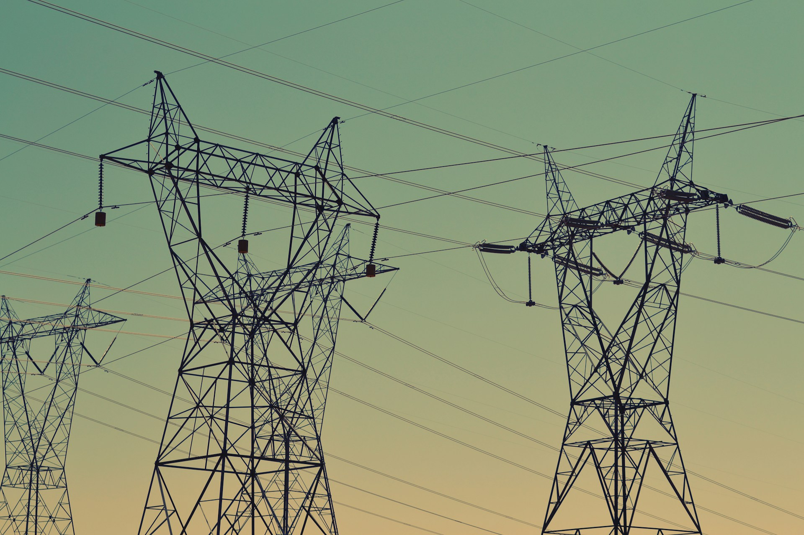
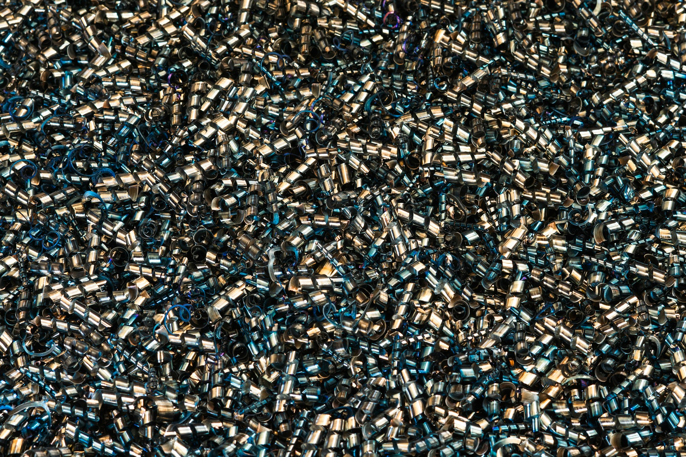
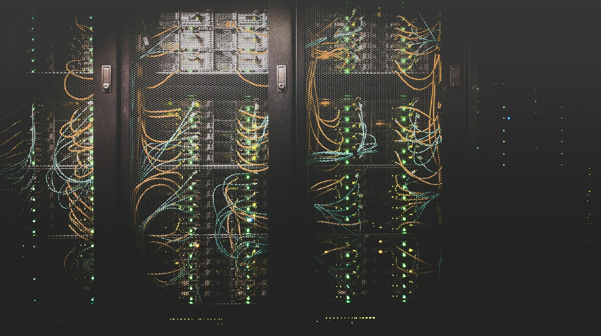

Energía
Para generar una respuesta, los servidores necesitan electricidad. También la necesitan para mantenerse funcionando.
DETRÁS DE CADA RESPUESTA

Para generar una respuesta, los servidores necesitan electricidad. También la necesitan para mantenerse funcionando.
Algunos sistemas de refrigeración usan agua para enfriar los equipos. El consumo depende del centro de datos.

Los chips y equipos requieren materias primas y procesos de fabricación. Lo digital también necesita recursos físicos.

La IA funciona en centros de datos: edificios con servidores, redes y sistemas de refrigeración.
DETRÁS DE LA PANTALLA
Mandás una consulta y recibís una respuesta en segundos. En ese tiempo, servidores procesan tu pedido. Aunque el trabajo ocurre lejos de tu pantalla, necesita electricidad, equipos y refrigeración.
No todos los prompts consumen lo mismo. El impacto cambia según el modelo, la tarea, la extensión de la respuesta y la infraestructura utilizada.
MasTU PANTALLA A UN SERVIDOR
La nube
está en
La tierra.
Definí qué necesitás y agregá contexto a tu consulta. Una pregunta clara puede evitar varios intentos.
Elegir este habitoPara una cuenta simple o un dato que ya tenés, quizá alcance con una calculadora, tus apuntes o una búsqueda.
Elegir este habitoLeé la respuesta antes de regenerarla. Si falta algo, pedí un cambio concreto en lugar de empezar de nuevo.
Elegir este habito